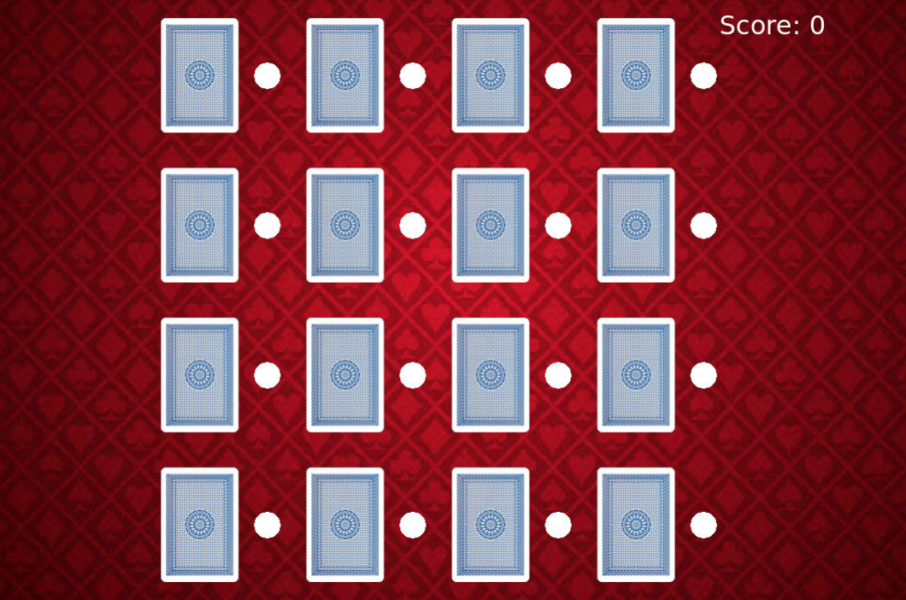

Portfolio
1.1.9 Project

Our 1.1.9 project is called Maze Runner. The game randomly generates squares/gates that the player has to go through and reach the end to score points. We used 'turtle' to create the grid system along with for loops and while loop, and the movement procedures (made with screen.listen()). The player coordinates are updated every 0.1 seconds so that collsions can be detected effectively.
1.2.5 Project
Our 1.2.5 project is Card Matching. We created a 4x4 grid of cards with their corresponding buttons next to them on the right. The game works by clicking on the white buttons to open the cards. It plays an animation to "open the card." Then if two cards have the same image, 5 points are added to the score. Once all cards are matched, the game ends
Scratch Project
This game is a remake of Jetpack Joyride made on Scratch. Press Space to start the game. Hold/Tap Space to move the minion up and down. Dodge the red lasers and collect as many bananas as you can! It uses procedures, user input(space), sounds(background music), animations (red lasers), change of costumes (minion turns red), scoring and events.
3.1.6
We concluded that the robot is on the desert plains biome. We were able to sort the continuous data given to us. We sorted our data into 4 graphs in order to represent sound, movement, light, and temperature and then graphed our data in google spreadsheets. We picked the desert plains because the temperature starts low and rises high and plateaus at a certain pouint. The sound is something that can go under 0. The movement is constant with breaks and the light is also bright and constant. (with some variances)